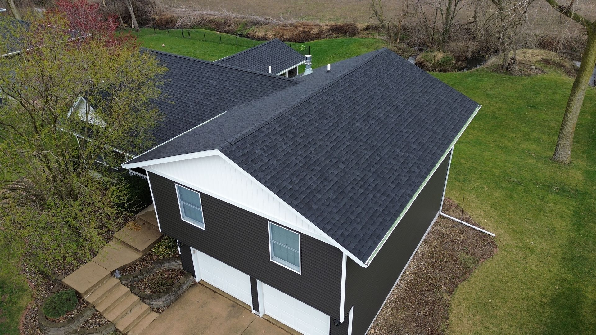
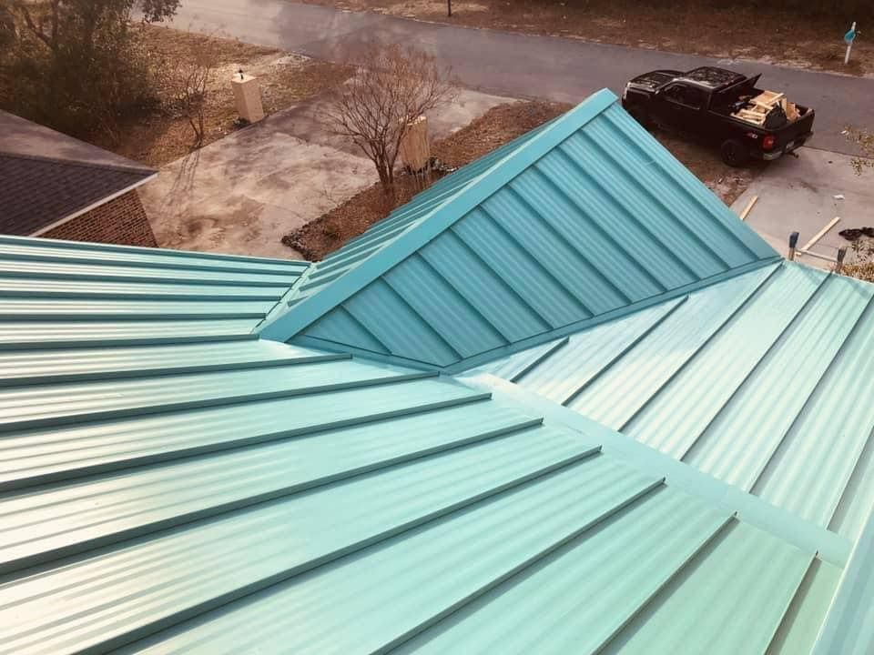
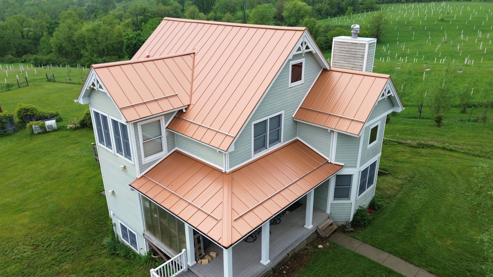
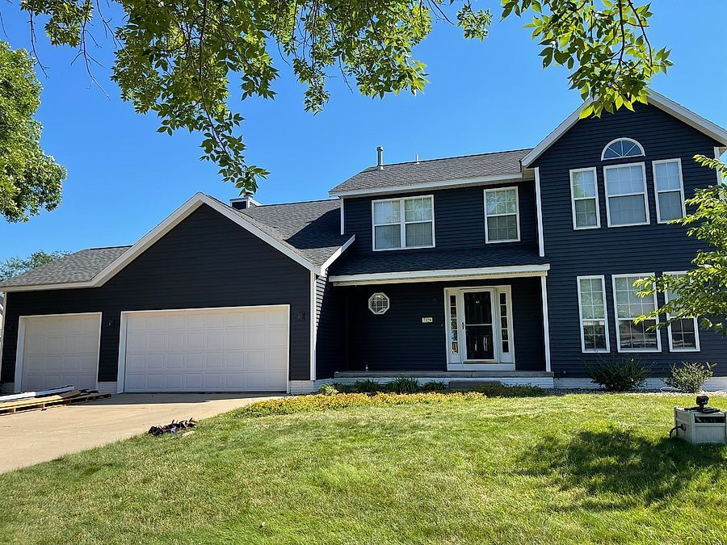
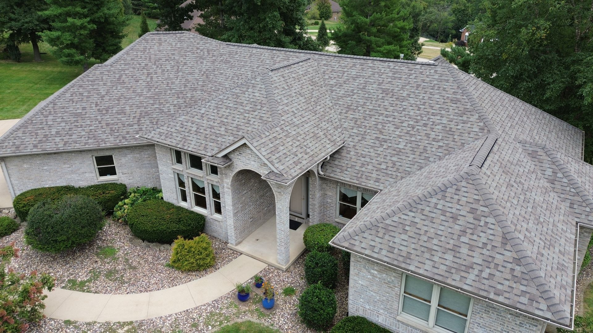
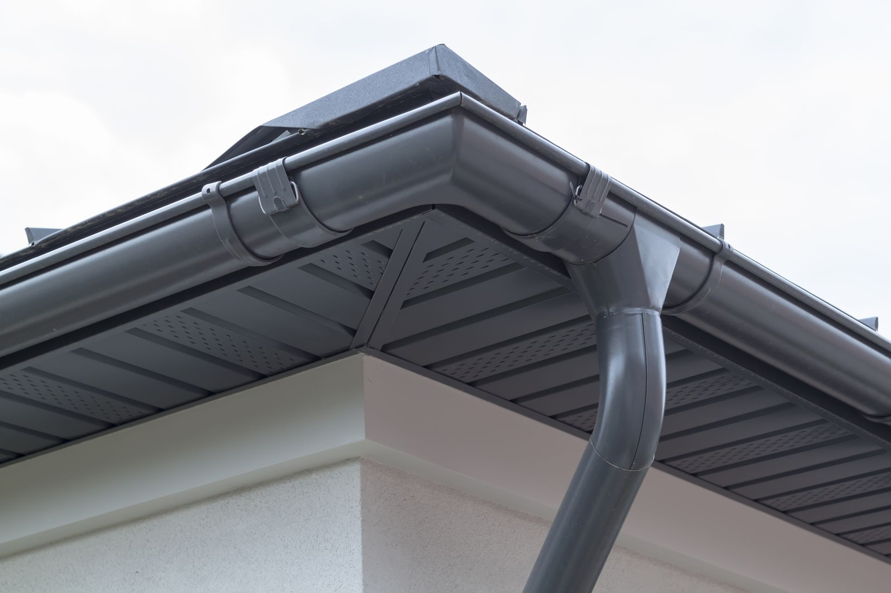

Roofing, siding & windows · Marion and Eastern Iowa
Free inspection, honest assessment, no pressure. Roofing, siding, windows, gutters and decks from Cedar Rapids to Davenport and Dubuque.
Recent Meeks Construction jobs, many shot from the drone.






Free inspections and quotes for full roofing, siding, window and exterior remodeling projects, with no strings attached.
Full replacements, repairs and storm damage across Eastern Iowa, shingle and metal, backed by manufacturer warranties.
New siding that boosts curb appeal and protects your home for decades, with a free estimate and an honest assessment.
Replacement windows and doors that stop the heating and cooling many homeowners don't realize they're losing.
Custom composite and wood decks built for Iowa weather, with railings and stairs, backed by a 15-year workmanship warranty.
Humbled to serve.
A free inspection that tells you what your roof actually needs, with no pressure.
We clean up like we were never there.
Licensed, bonded and insured, with manufacturer-backed warranties.
Meeks Construction has been doing exterior renovations across Eastern Iowa since 2017: roofing, siding, windows, gutters and decks.
Our owner lives in Le Claire. One slow winter he asked what we were going to do with the big ole trucks sitting around, so now we push snow for businesses and residents too.
Call the office to set up a free roof inspection and an honest assessment, with no pressure.
Cedar Rapids, Marion, Hiawatha, Iowa City, Coralville, North Liberty, Davenport, Dubuque, Waterloo, Muscatine, Tipton and beyond.